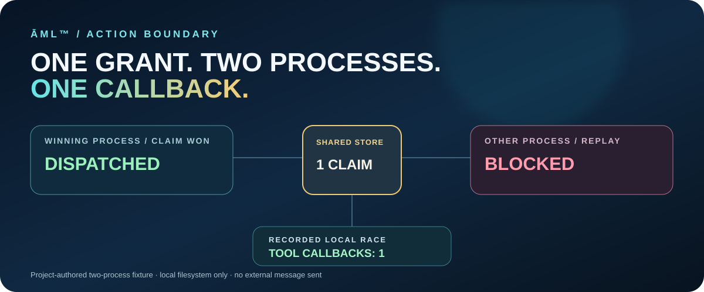

CLAIM ACCEPTED · ONE WORKER
Loading…
Reading the checked-in run report.
Two separate Node workers race to use the same host-issued approval. An exclusive claim on a shared local filesystem lets one reach the simulated tool callback. The replay is blocked.
This is a recorded, reproducible project run. It does not authenticate a person, send a message, prove delivery, or establish behavior on network filesystems.

Illustration of the observed outcome. The winning process is nondeterministic; the callback count is the invariant.
Each worker received the same proposal and grant. Only the host store could decide which claim won.
Reading the checked-in run report.
Local filesystem
exclusive claim
Reading the checked-in run report.
“Dispatched” means the local callback returned. It does not mean a message was delivered.
From the repository root, this command issues a short-lived grant, starts two child processes, and asserts exactly one callback:
The demo makes a temporary host directory and removes it at the end. It performs no external action.
Read the executable source ↗Proposal digest:
Loading…